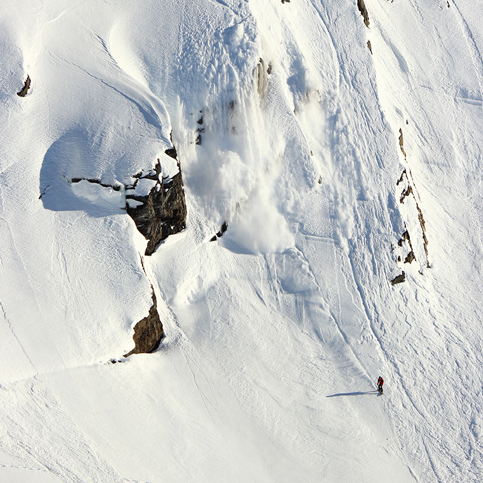

<div id="content">
  <div id="main">
    <div class="container">
      <div class="one_third">
        
      </div>

      <div class="two_third last">
          <h1>Brady Farr</h1>
          <div><span style="font-family: Helvetica;"><a href="https://youtu.be/Wjz3O_yr9r0">CLICK HERE TO SEE BRADY RIDE</a></span>
          </div>
          <div><strong><br /></strong>
          </div>
          <div><strong style="font-family: Helvetica;">MEET BRADY...&nbsp;</strong><span>Born and raised in Alaska. Grew up jibbing in the streets of anchorage, and riding the surrounding mountains. Moved to Crested Butte Colorado in 2002 lived     and rode there for 8 years. After finally finishing school I moved back to Alaska in 2011. I currently live in anchorage with my beautiful fiancé Rachel     and work as a carpenter.</span>
          </div>
          <div>
            <br />
          </div>
          <div><strong style="font-family: Helvetica;">BRADY'S FAVORITE NS BOARD IS...&nbsp;</strong><span>The Ripsaw is my favorite backcountry board, It's the perfect shape for freestyle pow. The Cobra is my number one choice for everything else. It handles     any and all terrain and tracked pow I can throw at it.&nbsp;</span>
          </div>
        </div>
      <hr>
  </div>
</div>